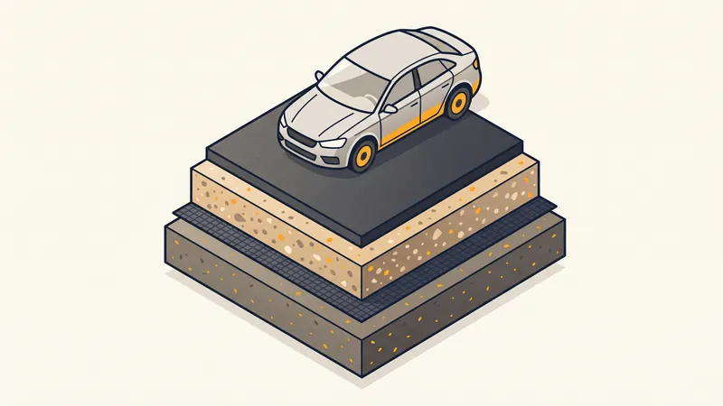

Aménagement Allée Carrossable : Matériaux & Prix 2026
L'allée carrossable est bien plus qu'un simple chemin d'accès : c'est la première impression que donne votre propriété. Qu'il s'agisse d'une entrée de garage, d'un chemin d'accès ou d'un parking privé, le choix du revêtement et la qualité de la réalisation déterminent la durabilité et l'esthétique de votre aménagement. À Aix-en-Provence et dans les Bouches-du-Rhône, nous réalisons des allées carrossables adaptées au climat méditerranéen et aux contraintes locales.

Les matériaux pour allée carrossable
L'enrobé (bitume)
L'enrobé à chaud est le revêtement le plus courant pour les allées carrossables. C'est un mélange de granulats (gravier, sable) et de liant bitumineux, appliqué à chaud (environ 160°C) et compacté au rouleau. Il offre une surface lisse, résistante et imperméable.
- Avantages : excellent rapport qualité-prix, mise en oeuvre rapide, résistance au passage des véhicules, faible entretien, durée de vie 15-20 ans.
- Inconvénients : esthétique limitée (noir standard), ramollit par forte chaleur (à prendre en compte en Provence), imperméable (gestion des eaux pluviales nécessaire).
- Prix : 25 à 50 €/m² (pose comprise, hors terrassement).
Le gravier stabilisé
Le gravier stabilisé est une couche de gravier naturel (calcaire, silex, porphyre) posée sur une structure drainante. Pour éviter que le gravier ne migre sous le passage des véhicules, on utilise des dalles alvéolaires (nid d'abeille) qui maintiennent les graviers en place. C'est une solution très appréciée pour les propriétés provençales.
- Avantages : esthétique naturelle, perméable (pas de ruissellement), large choix de couleurs et de granulométries, intégration paysagère idéale.
- Inconvénients : nécessite un entretien régulier (ratissage, désherbage, appoint de gravier), moins confortable pour la marche, peut projeter des graviers.
- Prix : 20 à 40 €/m² (avec dalles alvéolaires).
Le béton désactivé
Le béton désactivé est un béton coulé en place dont la surface est traitée avec un produit désactivant qui met en valeur les granulats en relief. Le résultat est une surface texturée, antidérapante et très esthétique. Le choix des granulats détermine la couleur et l'aspect final.
- Avantages : très esthétique, antidérapant, extrêmement résistant (30+ ans), faible entretien, nombreuses possibilités de couleurs.
- Inconvénients : prix élevé, mise en oeuvre technique (coulage, désactivation dans un temps précis), risque de fissuration si le sol n'est pas stable.
- Prix : 50 à 100 €/m² (pose comprise).
Les pavés
Les pavés autobloquants en béton ou en pierre naturelle offrent un rendu haut de gamme. Posés sur un lit de sable compacté, ils forment une surface modulaire qui s'adapte aux mouvements du sol sans se fissurer. Les pavés en pierre naturelle (granit, grès, calcaire) sont plus coûteux mais intemporels.
- Avantages : esthétique premium, durabilité exceptionnelle (50+ ans), réparations ponctuelles possibles (remplacement de pavés individuels), perméable aux joints.
- Inconvénients : prix élevé, pose longue et technique, désherbage des joints nécessaire, surface légèrement irrégulière.
- Prix : 60 à 120 €/m² (pavés béton) ou 80 à 200 €/m² (pierre naturelle).

Comparatif des prix au m²
| Revêtement | Prix au m² | Durée de vie | Entretien |
|---|---|---|---|
| Gravier stabilisé | 20 - 40 € | 10-15 ans | Moyen |
| Enrobé à chaud | 25 - 50 € | 15-20 ans | Faible |
| Béton désactivé | 50 - 100 € | 25-30 ans | Faible |
| Pavés béton | 60 - 120 € | 30-50 ans | Moyen |
| Pavés pierre naturelle | 80 - 200 € | 50+ ans | Faible |
Prix indicatifs TTC dans les Bouches-du-Rhône en 2026, pose comprise, hors terrassement préparatoire (15-30 €/m²).
Allée carrossable pas chère : quel matériau au meilleur prix ?
Si votre priorité est le budget, voici les solutions classées du moins cher au plus cher, à qualité de structure égale (la couche de fondation, elle, ne se négocie pas) :
- Gravier compacté simple (10 - 20 €/m²) : la solution la plus économique. Sans dalles stabilisatrices, le gravier migre sous les roues : à réserver aux budgets serrés et aux faibles passages, avec un rechargement tous les 2-3 ans.
- Bicouche gravillonné (15 - 30 €/m²) : l'aspect "petite route de campagne" au prix le plus bas des revêtements liés. Durée de vie 8-12 ans.
- Gravier + dalles alvéolaires (20 - 40 €/m²) : le meilleur compromis prix/tenue pour un rendu naturel, perméable et sans flaques.
- Enrobé à chaud (25 - 50 €/m²) : le plus bas coût rapporté à la durée de vie (15-20 ans). C'est le vrai "pas cher" sur 20 ans.
Méfiez-vous des offres d'enrobé « à prix cassé » proposées en porte-à-porte : sans couche de fondation compactée ni bordures, le revêtement se déforme dès le premier été. Un prix anormalement bas cache presque toujours une structure absente.
Chemin carrossable en terrain naturel
Créer un chemin carrossable sur un terrain nu (accès à une parcelle, desserte d'une maison en fond de terrain, chemin agricole) obéit à une logique différente d'une allée urbaine : les longueurs sont plus importantes, le budget au m² doit rester maîtrisé et le terrain n'a jamais été préparé.
- Étude du tracé : suivre au mieux les courbes de niveau pour limiter les terrassements ; une pente longitudinale sous 12 % évite le ravinement et reste praticable par tous les véhicules.
- Structure type : décapage de la terre végétale (20-30 cm), géotextile, puis 20 à 30 cm de GNT 0/80 ou 0/31,5 compactée. Ce chemin « en grave » est carrossable tel quel pour 15 - 30 €/m².
- Gestion de l'eau : fossé ou noue côté amont, passages busés aux points bas — c'est l'eau, pas le trafic, qui détruit les chemins naturels.
- Finition optionnelle : bicouche ou enrobé posé ultérieurement sur la grave stabilisée, une fois le chemin « tassé » par un hiver de circulation.
Sur les terrains calcaires fréquents autour d'Aix-en-Provence, le rocher affleurant peut servir d'assise : un simple réglage au brise-roche et à la niveleuse réduit alors fortement le coût de structure.
Les étapes de réalisation d'une allée carrossable
1. Terrassement et décaissement
Le terrassement est la première étape. On décaisse le sol sur 40 à 55 cm selon le type de revêtement et la portance du sol. La terre végétale est retirée et le fond de forme est réglé avec une pente de 2 % minimum pour l'évacuation des eaux pluviales.
2. Pose du géotextile
Un géotextile anti-contaminant est posé sur le fond de forme pour empêcher les remontées de fines et la migration des matériaux. Il sépare le sol naturel de la structure de l'allée.
3. Couche de fondation
Une couche de grave naturelle (0/31,5 ou 0/80) est étalée sur 20 à 30 cm et compactée au rouleau. Cette couche assure la portance de l'allée et répartit les charges des véhicules. Le compactage doit atteindre 95 % de l'OPN (Optimum Proctor Normal).
4. Couche de base
Une couche de grave traitée ou de tout-venant 0/20 est posée sur 15 à 20 cm et compactée. Elle constitue l'assise directe du revêtement de surface. Pour l'enrobé, un imprégnation de surface peut être appliquée.
5. Pose du revêtement de surface
Selon le matériau choisi : application de l'enrobé au finisseur et compactage au rouleau, coulage et désactivation du béton, pose des pavés sur lit de sable ou épandage du gravier dans les dalles alvéolaires.
6. Bordures et finitions
Des bordures en béton, pierre ou acier corten délimitent l'allée et empêchent la migration du revêtement. Elles sont posées sur un lit de béton de calage avant le revêtement de surface. Le drainage de l'allée (caniveaux, grilles) est installé à cette étape.
Conseils pour votre allée carrossable en Provence
- Privilégiez les couleurs claires : en été, l'enrobé noir absorbe la chaleur et peut atteindre 70°C en surface. Les revêtements clairs (béton désactivé, gravier calcaire) réfléchissent la lumière et restent plus frais.
- Pensez au ruissellement : avec les fortes pluies méditerranéennes, prévoyez un système de collecte des eaux (caniveau, noue, puisard) pour éviter que l'eau ne se déverse vers la maison.
- Respectez les distances : si votre allée crée un accès sur la voie publique, vérifiez les règles de recul et de visibilité auprès de la mairie d'Aix-en-Provence.
- Intégrez les réseaux : si votre allée passe au-dessus de canalisations (viabilisation), prévoyez des regards de visite accessibles.
STP Terrassement : expert en allées carrossables
Spécialiste de l'aménagement extérieur à Aix-en-Provence, STP Terrassement réalise vos allées carrossables de A à Z : terrassement, structure, revêtement et finitions. Nous travaillons avec tous les matériaux et adaptons chaque projet à votre budget et à l'environnement de votre propriété dans les Bouches-du-Rhône et la région PACA.
Projet d'allée carrossable ?
Devis gratuit et personnalisé pour votre allée carrossable. Visite du terrain sous 48h.